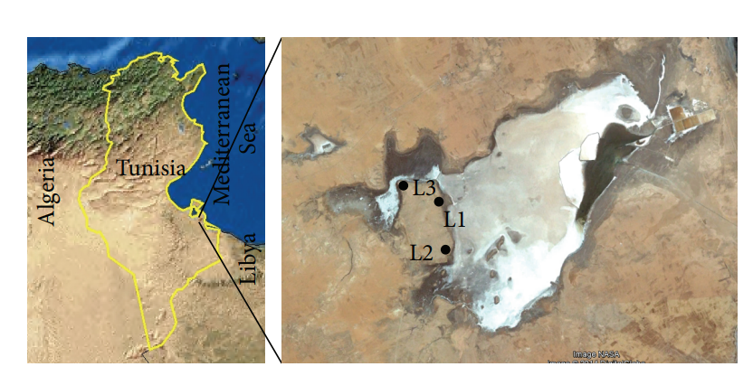
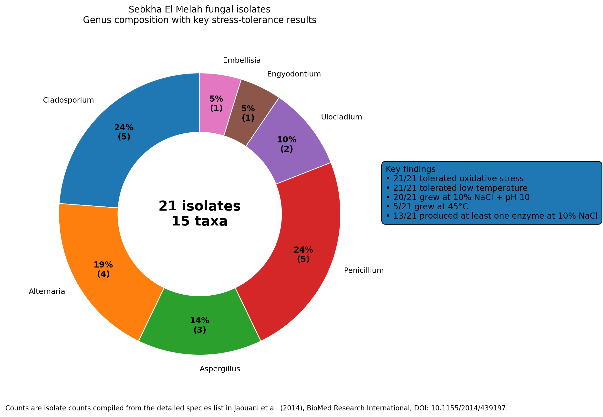
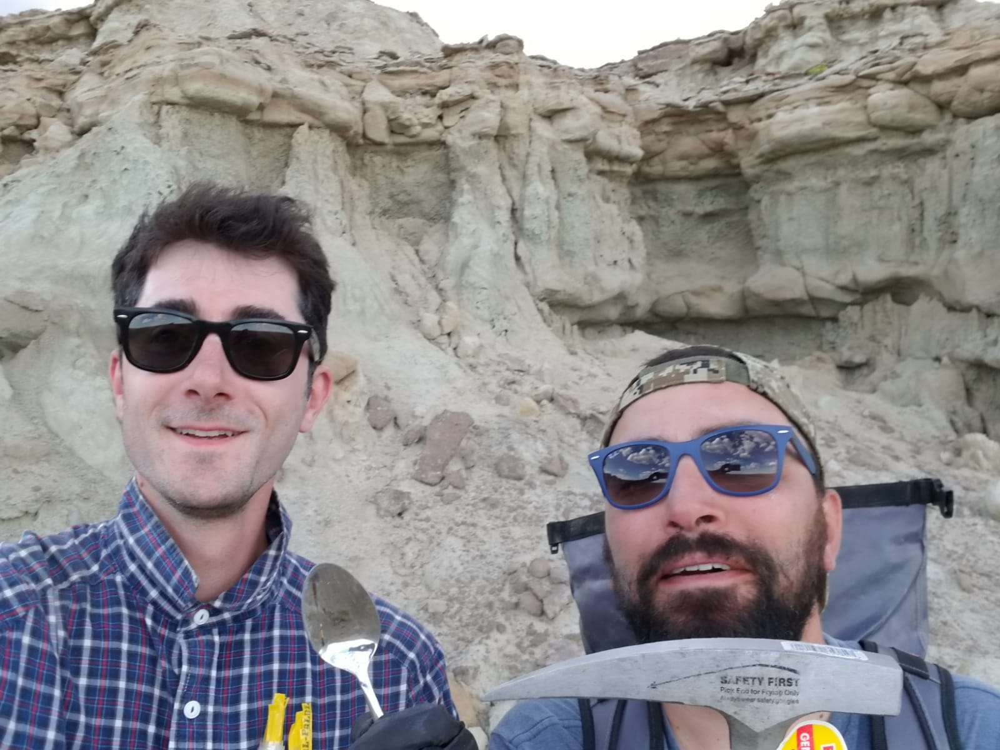
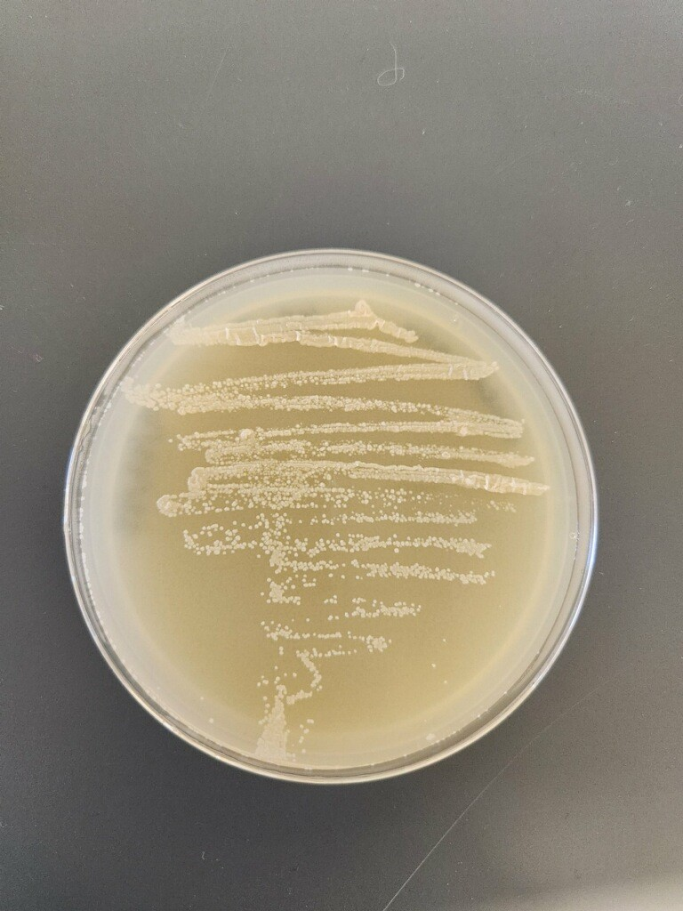
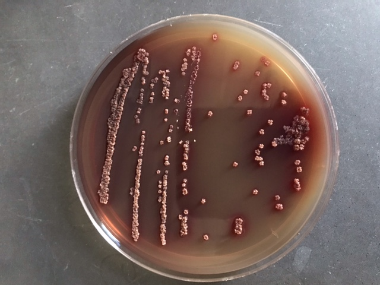
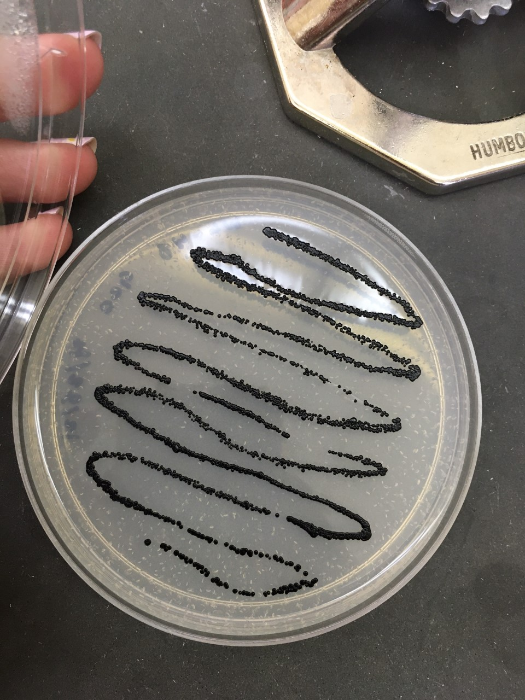
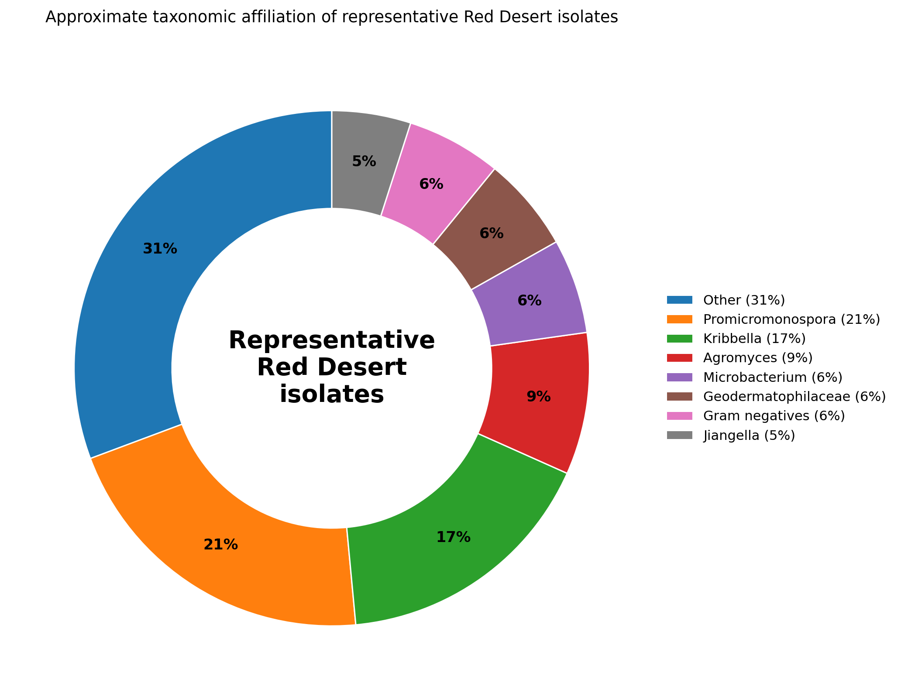
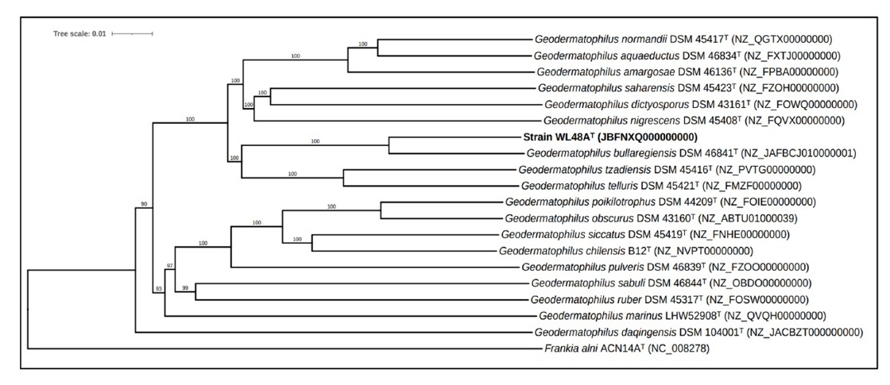

Extremophile Microbiology
I study microorganisms adapted to severe environmental stress, with a focus on diversity, ecology, genomics, and the biological mechanisms that contribute to ecological fitness in extreme biotopes.
Why extremotolerance interests me
A central theme of my research is understanding how microorganisms survive, remain biologically active, and maintain ecological fitness under environmental conditions that impose major physiological constraints. Extremotolerant systems provide powerful natural models for addressing broader questions in microbial ecology, adaptation, genome evolution, and the limits of habitability.
I am especially interested in connecting environmental occurrence and taxonomic diversity with the physiological and molecular traits that allow microorganisms to persist under stress. Across different projects, this has meant moving from environmental sampling and diversity analysis toward comparative genomics and, ultimately, mechanistic studies of stress response.
This research direction began with halotolerant fungal communities in Saharan salt flats and later expanded into a broader program centered on the discovery, characterization, and comparative study of rock-associated microbial isolates from the Wyoming Red Desert.
Early work: halotolerant fungi from Sebkha El Melah
My early work in Tunisia examined fungal diversity and stress tolerance in hypersaline Saharan environments, with a particular focus on Sebkha El Melah in southern Tunisia.
This work contributed to the study by Jaouani et al. (2014), which characterized moderately halotolerant micromycetes isolated from a Saharan salt flat. The study combined isolation, identification, and physiological profiling to describe fungal diversity under hypersaline conditions and to evaluate tolerance to multiple environmental stressors.
Sampling map of Sebkha El Melah

Sampling map showing Sebkha El Melah in southern Tunisia and the three sampling locations (L1, L2, L3). Adapted from Jaouani et al. 2014, BioMed Research International (CC BY).
Genus composition and stress-tolerance summary

Website-adapted summary chart based on the published isolate list and tolerance results reported in Jaouani et al. 2014.
Summary of findings
The study recovered 21 fungal isolates representing 15 taxa. Physiological screening showed broad tolerance to environmental stress. All isolates tolerated oxidative stress and low temperature, nearly all were able to grow at 10% NaCl and pH 10, and a subset was capable of growth at 45°C.
In addition, many isolates retained extracellular enzymatic activity under saline conditions, highlighting the functional potential of fungi adapted to hypersaline environments. This work helped shape my long-term interest in how microorganisms adapt to environmental extremes, and how stress tolerance can be studied at the intersection of ecology, physiology, and diversity.
Recent work: microbial discovery in the Wyoming Red Desert
More recently, my extremophile microbiology research has focused on the discovery and characterization of rock-associated bacterial isolates from exposed lithic environments in the Wyoming Red Desert.
Why rock-associated microorganisms matter
Rock surfaces and lithic microhabitats represent challenging environmental systems where microorganisms experience multiple overlapping stresses while also interacting directly with mineral substrates. These microorganisms are important not only as inhabitants of exposed extreme biotopes, but also as participants in processes such as surface colonization, mineral transformation, and rock weathering.
In this context, rock-associated microbial communities provide a useful framework for asking how environmental stress, substrate association, and microbial traits combine to shape persistence and ecological fitness.

Field sampling in the Wyoming Red Desert during collection of rock-associated microbial isolates.
Sampling campaign and isolate collection
This research program has centered on the isolation, cultivation, phenotypic characterization, genome sequencing, and taxonomic evaluation of microorganisms recovered from exposed rock-associated habitats in the Red Desert. The goal is not only to document microbial diversity, but also to develop a comparative framework for understanding how these organisms persist in arid, exposed, nutrient-poor environments.
The resulting collection includes multiple bacterial lineages rather than a single taxonomic group, reflecting the broader ecological diversity associated with these lithic environments.
Representative isolates from the Red Desert collection
The collection includes morphologically distinct bacterial isolates recovered from Red Desert samples. Representative colonies illustrate the visual diversity that motivated subsequent comparative and taxonomic work.

Kribbella sp. isolate from the Wyoming Red Desert.

Novel Actinomadura sp. isolate.

Novel Geodermatophilus sp. isolate.
Approximate taxonomic affiliation of representative isolates

Website-adapted chart based on the proportional summary shown in my Red Desert presentation materials. Percentages are approximate and presented here as a visual overview of the collection.
Culture collection deposition and collaboration
An important component of this effort has been the formal preservation and dissemination of biological material. Strains from the Red Desert collection have been deposited in international culture collections, including DSMZ, helping ensure that these isolates remain accessible for future comparative, taxonomic, and functional studies.
This culture-collection dimension strengthens the scientific value of the project by transforming isolated strains into curated resources for the broader research community.
Geodermatophilus maliterrae as a featured published case study
A published example emerging from this work is Geodermatophilus maliterrae, a novel member of the Geodermatophilaceae recovered from badland rock surfaces in the Wyoming Red Desert. This study illustrates the broader structure of the research program: environmental sampling, cultivation, phenotypic characterization, genome sequencing, phylogenomic analysis, and formal taxonomic description.
The type strain, WL48AT, was isolated from the surface of badland sedimentary rock, formed dry black colonies, and was deposited in major international repositories including DSMZ, NCIMB, NCCB, and ATCC. The publication provides a concrete example of how field sampling in extreme lithic environments can lead to the recovery and formal recognition of previously undescribed bacterial diversity.
Evidence supporting species distinction
WL48AT was most closely related to Geodermatophilus bullaregiensis, but genome-based comparisons clearly supported its recognition as a distinct species.
| Comparison metric | WL48AT vs. G. bullaregiensis | Interpretation |
|---|---|---|
| 16S rRNA gene similarity | 98.8% | Indicates close phylogenetic relatedness, but 16S similarity alone does not establish species identity. |
| Average nucleotide identity (ANI) | 93.3% | Below the commonly used 95–96% genomic species boundary. |
| Digital DNA–DNA hybridization (dDDH) | 51.8% | Below the 70% threshold commonly used for prokaryotic species delineation. |
Phylogenomic placement

Phylogenomic placement of strain WL48AT among closely related Geodermatophilus type strains. WL48AT forms a distinct, well-supported subclade with G. bullaregiensis. Adapted from Ben Tekaya et al. 2024, International Journal of Systematic and Evolutionary Microbiology (CC BY).
Ecological and genomic highlights
Beyond formal species description, the genome of WL48AT provides early clues to biological traits potentially relevant to persistence on exposed rock surfaces. Comparative genomic analysis identified genes associated with DNA repair, oxidative stress, carbon starvation, osmotic stress, and resistance to several metals and toxic compounds.
WL48AT also carried a distinct set of genes associated with arsenic resistance and contained nine predicted biosynthetic gene clusters, providing additional avenues for investigating the ecological and metabolic capabilities of this rock-associated bacterium.
Taken together, G. maliterrae provides a bridge between environmental discovery, bacterial systematics, comparative genomics, and the broader question of how microorganisms persist at exposed lithic interfaces.
From discovery to mechanism
The ultimate aim of this work is to move beyond cataloguing diversity and toward understanding the biological mechanisms that contribute to ecological fitness in extreme environments.
Mechanistic direction: stress-response biology in extremotolerant bacteria
Species discovery and phylogenomic characterization provide the framework, but they are not the endpoint. A major long-term objective of this research area is to determine how extremotolerant microorganisms respond to stress at molecular and cellular levels, and how those responses contribute to survival and persistence in natural systems.
As an initial step in this direction, we carried out a small proteomic investigation of Geodermatophilus obscurus G20 following UV-C exposure. This work was designed as an early mechanistic study to help connect environmental tolerance with measurable molecular responses.
Future directions
This research area continues to evolve from descriptive discovery toward comparative and mechanistic analysis.
Where this program is going
- Complete the taxonomic and genomic characterization of additional Red Desert isolates, expanding the collection of extremotolerant bacteria associated with lithic environments.
- Use comparative genomics and targeted physiological studies to identify traits linked to ecological fitness, including persistence under desiccation, irradiation, nutrient limitation, and other environmental stresses.
- Develop mechanistic studies that connect environmental occurrence, organismal traits, and molecular responses, with the broader goal of understanding microbial contributions to rock weathering, environmental resilience, and life at environmental limits.